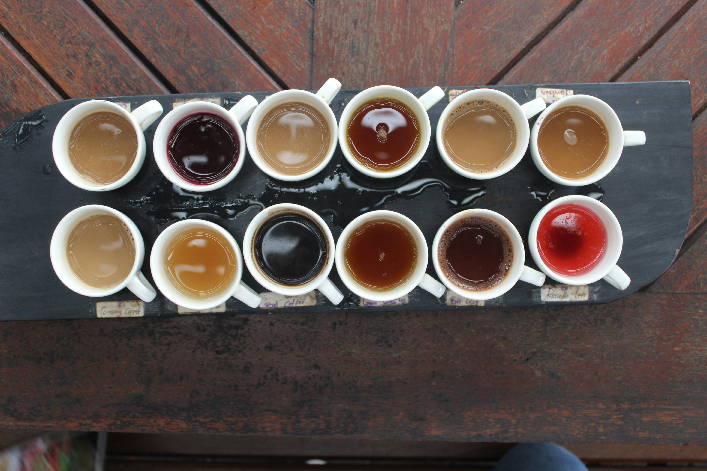

Formacion
Formacion

Formaciones

Barista Iniciación
Fundamentos del café, tipos de grano, molienda, espresso básico y uso de la cafetera.

Barista Intermedio
Técnicas de extracción, texturizado de leche, latte art básico y calibración de molienda.

Barista Avanzado
Métodos de filtrado, recetas especializadas, latte art avanzado y mantenimiento profesional de equipos.

Curso Latte Art
Texturización de leche, vertido libre, figuras básicas y técnicas avanzadas.

Curso Brewing
Métodos de extracción como V60, Chemex, Aeropress y calibración de molienda.

Taller Cata
Cata de café, identificación de sabores, aromas y evaluación de calidad.